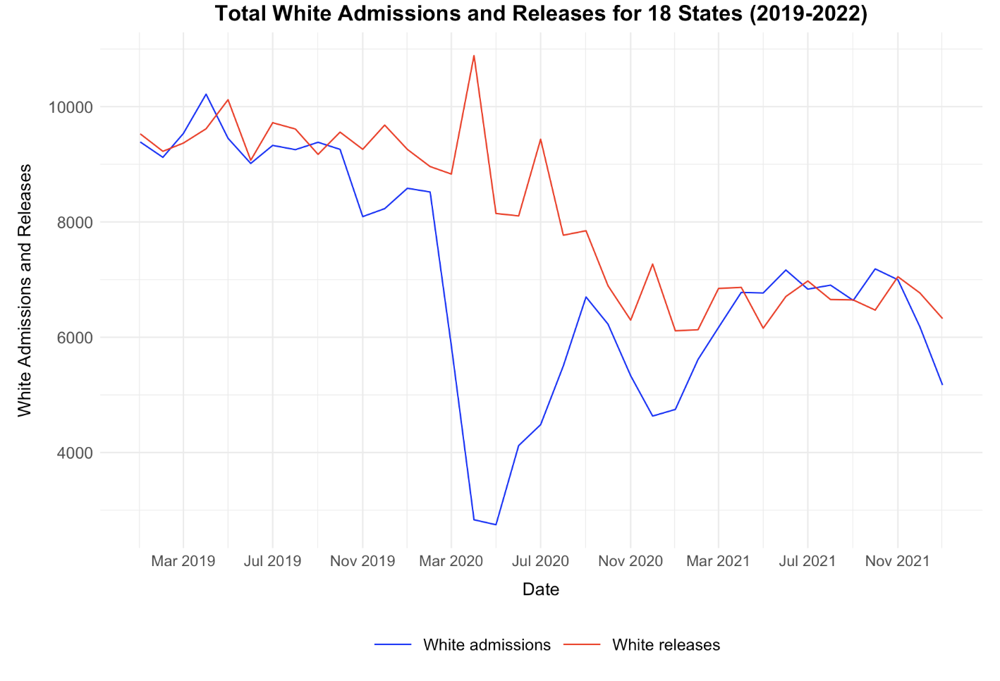
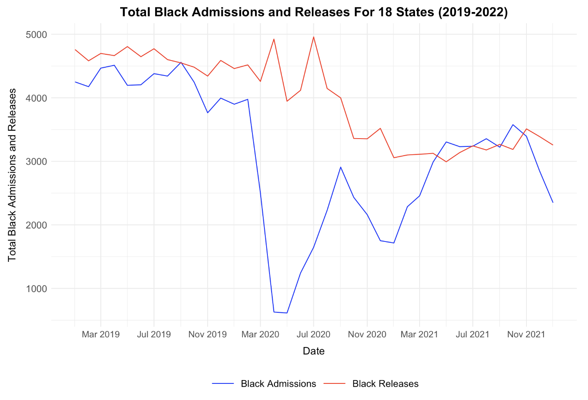
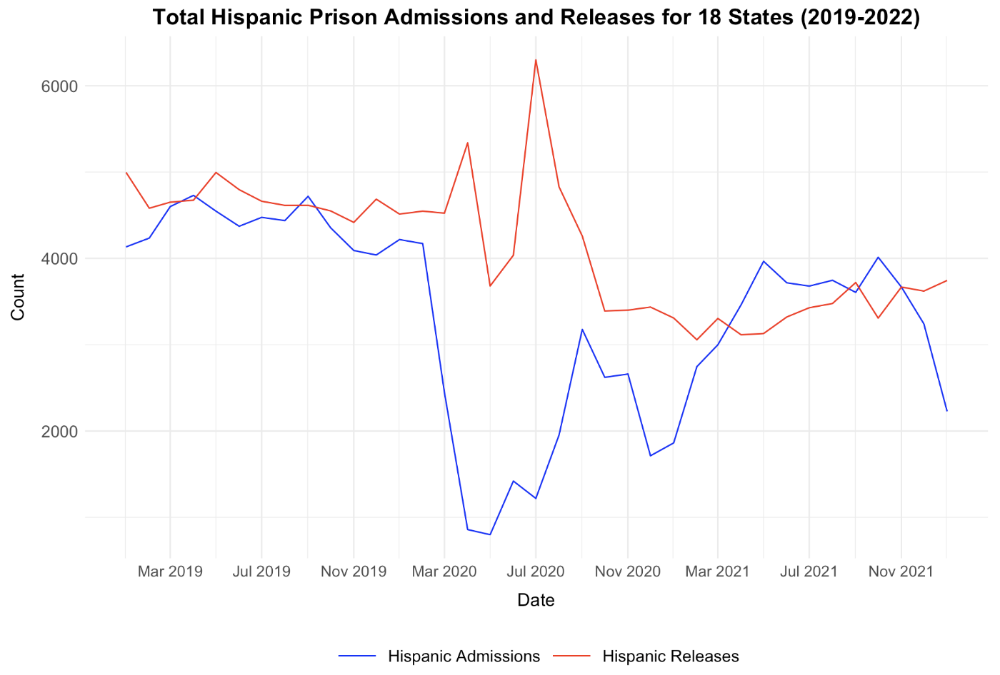

Analysis
Introduction
This analysis aims to uncover significant patterns and insights from prison admissions and releases data during the COVID-19 pandemic. We explore the relationships between admissions, releases, and COVID-19 cases and deaths, emphasizing trends across different racial groups and focusing on California as a case study due to its diversity and population size. By integrating statistical modeling, we strive to elucidate the broader impacts of the pandemic on the correctional system and highlight areas for further investigation.
Total Prison Admissions and Releases

The plot titled “Total Prison Admissions and Releases for 18 States (2019-2022)” provides insights into the trends of total prison admissions and releases during this period, with the blue line representing admissions and the red line indicating releases. The data captures patterns before, during, and after the COVID-19 pandemic. Notably, there is a significant decline in admissions from February to April 2020, with counts dropping from 17500 to just below 5000, coinciding with the early rise of the pandemic. Additionally, two spikes in releases are observed: one in April 2020, possibly related to prison population management, and another in July 2020.
The subsequent rise in admissions during September 2020, followed by a decline until November, suggests evolving responses within the correctional system. While this analysis highlights distinct patterns, it is essential to consider potential factors behind these trends. For instance, the lockdown may have contributed to reduced crime rates due to fewer people being outside, leading to fewer arrests. Additionally, individuals with minor offenses might have been released earlier to manage the pandemic’s impact on prison populations. However, these interpretations are hypotheses that require further investigation and reading to confirm their validity.
This analysis underscores the complexity of interpreting shifts in prison data during unprecedented events like the COVID-19 pandemic.
Admissions and Releases by Race
These race categories exhibit similar patterns, with a surge in releases and a decline in admissions, from March to June 2020.
Total White Admissions and Releases
 In the white population plot, there is a steady trend in admissions and releases. Until March 2020, there is a spike in releases while there is a decrease in admissions. Then, as the admission slowly increases and the releases decrease, there occurs a small spike and decrease again in releases and admissions. Towards November 2020 and onwards, the relationship between admissions and releases starts to regulate but not in the same numbers as in 2019.
Total Black Admissions and Releases
 The graph illustrates trends in Black admissions and releases from 2019 to 2022. Both lines display relative stability in early 2019; however, admissions experience a sharp decline around March 2020, likely due to COVID-19 disruptions. Admissions decreased to around 500 by April 2020, while releases exhibit more fluctuations. Notably, there are two spikes in releases: one in April 2020, possibly related to efforts to manage prison populations during the pandemic, and another in July 2020. Admissions show some recovery, reaching around 3500 by late 2020, but remain significantly lower than pre-pandemic levels.
Total Hispanic Admissions and Releases
 The graph illustrates trends in Hispanic admissions and releases from 2019 to 2022. Prior to 2020, both admissions and releases have a relatively steady trend, with releases slightly higher than admissions at times. Around March 2020 (the start of the COVID-19 pandemic), there’s a sharp drop in admissions (from approximately 4200 to less than 1000). There are two spikes in releases shortly after, possibly as a response to the pandemic. After the initial pandemic impact, both admissions and releases fluctuate, but the admissions remain lower than pre-2020 levels. Releases eventually stabilize around mid-2021 but continue to hover close to the admission rates.
Modeling and Inference
To further understand the relationship between COVID-19 metrics and prison admissions, we employed statistical modeling. We modeled monthly admissions as a function of total monthly COVID-19 cases and deaths.
Model 1: Admissions vs. Total Monthly COVID-19 Cases
Call:
lm(formula = monthly_admissions ~ total_monthly_cases, data = model_data)
Residuals:
Min 1Q Median 3Q Max
-10963 -1328 1155 2767 3891
Coefficients:
Estimate Std. Error t value Pr(>|t|)
(Intercept) 1.576e+04 8.276e+02 19.04 <2e-16 ***
total_monthly_cases -2.652e-03 8.261e-04 -3.21 0.0029 **
Residual standard error: 3927 on 34 degrees of freedom
Multiple R-squared: 0.2326, Adjusted R-squared: 0.21
F-statistic: 10.3 on 1 and 34 DF, p-value: 0.002897In this linear regression model, the intercept (15760) represents the expected number of monthly admissions when COVID-19 cases are zero. The coefficient for total monthly cases (-0.002652) indicates a slight decrease in admissions for each additional COVID-19 case, with a p-value of 0.0029, demonstrating statistical significance. The model explains 23.26% of the variation in admissions.
Model 2: Admissions vs. Total Monthly COVID-19 Deaths
Call:
lm(formula = monthly_admissions ~ total_monthly_deaths, data = model_data)
Residuals:
Min 1Q Median 3Q Max
-9303.1 -888.1 800.7 2391.2 3795.0
Coefficients:
Estimate Std. Error t value Pr(>|t|)
(Intercept) 1.648e+04 7.608e+02 21.659 < 2e-16 ***
total_monthly_deaths -2.685e-01 5.645e-02 -4.756 3.55e-05 ***
Residual standard error: 3474 on 34 degrees of freedom
Multiple R-squared: 0.3995, Adjusted R-squared: 0.3819
F-statistic: 22.62 on 1 and 34 DF, p-value: 3.549e-05In this linear regression model, the intercept (16480) represents the expected monthly admissions when COVID-19 deaths are zero. The coefficient for total monthly deaths (-0.2685) indicates a larger decrease in admissions for each additional COVID-19 death. The p-value (<0.0001) signifies high statistical significance. The model explains 39.95% of the variation in admissions, performing better than the previous model.
Both models demonstrate significant negative relationships between COVID-19 metrics and prison admissions, highlighting the pandemic’s potential influence on correctional system dynamics.
The negative coefficient for the modeling results of admissions aligns with the patterns observed in the EDA plots, where both COVID cases and deaths were associated with a decline in prison admissions over time. This consistency between the statistical findings and visual analysis reinforces the observed relationships in the data.
California Analysis
To deepen our insights, we narrowed our focus to California, the most populous state with significant racial diversity. This allows us to observe patterns that might not be evident in aggregate data.
Demographic Overview of California in 2020

Using US Census Bureau data, California’s racial demographics for 2020 revealed that Hispanic/Latino populations were the largest group, followed by White, Black, and Other categories. The population remained relatively consistent during 2019-2021, with Hispanic/Latino populations increasing slightly. These demographics provide a context for understanding disparities in prison admissions and releases.

Original Dataset Analysis
The analysis of California’s prison admissions and releases data from January 2019 to December 2021 highlights notable shifts, particularly during 2020, likely driven by the COVID-19 pandemic. In January 2019, admissions were 2716 and releases were 3476, showing a slightly higher rate of releases than admissions. This pattern persisted throughout 2019. By 2020, admissions dropped sharply while releases surged, especially in April and July, reflecting policies to reduce prison populations. By 2021, admissions gradually increased, narrowing the gap between admissions and releases.

Alternative Dataset Analysis
That was the analysis based on our original dataset, selected as the foundation of our study from day one. Our group has since identified a complementary California-specific dataset from the California Department of Corrections and Rehabilitation, available at https://data.ca.gov/dataset/monthly-admissions-and-releases. This new California dataset, titled “California’s Monthly Admissions and Releases,” provides monthly records of the number of individuals admitted to and released from California’s CDCR custody from January 31, 2014, to the present. The analysis of California’s prison admissions and releases from January 2019 to January 2022 reveals small discrepancies between the two datasets. Differences, particularly during the pandemic, may result from variations in data collection methods. Despite these discrepancies, both datasets align well in illustrating broader trends.
2019: Minor Monthly Variations
In 2019, both datasets consistently show that releases exceeded admissions, suggesting a gradual reduction in the prison population across California. However, some monthly figures vary slightly. For instance, in November 2019, the original dataset records 2592 admissions and 3050 releases, while the new dataset reports 2590 admissions and 3024 releases. Similarly, in December 2019, our original dataset shows 2705 admissions and 3260 releases, whereas the new dataset lists 2702 admissions and 3253 releases. These small differences, although unlikely to impact overall trends significantly, suggest subtle differences in reporting or rounding conventions between the two sources.
2020: Noticeable Differences During COVID-19 Impact
The most significant discrepancies appear during 2020, a year marked by drastic policy changes in response to COVID-19. Both datasets reflect a steep decline in admissions and a surge in releases as California likely implemented measures to reduce prison populations. However, the specifics differ. For example, in April 2020, our original dataset records 9 admissions and 4629 releases, while the new dataset shows only 2 admissions with 4627 releases.
A similar pattern is observed in July 2020, a peak period for releases: the original dataset lists 9 admissions and 7522 releases, whereas the new dataset shows 3 admissions and 7520 releases. Although these variations are minor, they indicate that each dataset has slightly different figures, potentially due to differences in data classification or inclusion criteria. Additionally, both datasets capture the high release counts around mid-2020, though the new dataset tends to show slightly lower total releases for certain months.
2021: Differences in the Path Back to Balance
In 2021, as admissions and releases began to move toward a balance, the datasets remain aligned in terms of general trends but continue to differ in specific numbers. In January 2021, for instance, our original dataset shows 593 admissions and 1820 releases, while the new dataset records 409 admissions and 1817 releases. As the year progresses, both datasets display more consistency. By July 2021, the numbers are nearly identical, with both datasets showing 2961 admissions, although our original dataset reports 2459 releases, while the new dataset lists 2457. By December 2021, the two datasets converge closely, with both listing around 2904 admissions and 2637-2640 releases, signaling a return to pre-COVID patterns.
Summary of Dataset Comparisons
Overall, both datasets depict three distinct phases in California’s prison admissions and releases: a stable 2019, a drastic adjustment period in 2020 due to COVID-19, and a gradual return to balance in 2021. Minor discrepancies, particularly in 2020, suggest variations in data reporting practices between the sources, which may influence specific monthly totals. Despite these differences, the datasets align well in illustrating the broader trends, reinforcing the understanding of California’s response to the pandemic within its prison system.
Limitations and Future Work
Limitations
- Data Scope: Our models relied on aggregated state-level data, which might obscure localized trends or policies.
- Predictor Variables: The models primarily focused on COVID-19 metrics, leaving out other potential predictors such as economic indicators or policy changes.
- Data Quality: Variations between datasets highlight challenges in standardizing data collection and reporting practices.
Future Work
- Integrating additional predictors, such as unemployment rates or policy interventions, could enhance model performance.
- Exploring data at a more granular level, such as county-level analysis, might provide deeper insights.
- Examining longer-term impacts of the pandemic on prison systems would offer a more comprehensive understanding.